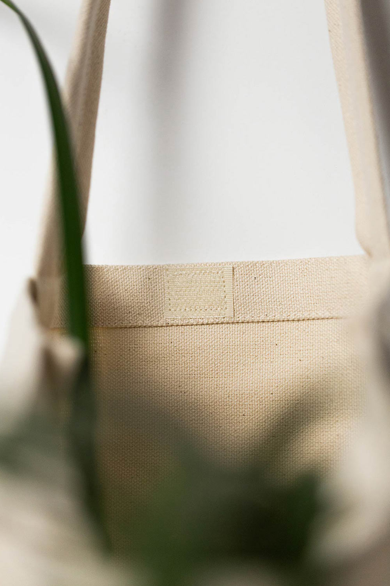

|  |
|
This cotton bag revives the romance of the holidays by illuminating several Christmas symbols.
The textile bag is adorned with meticulously hand-illustrated patterns to fit as many seasonal accessories as possible, including hats, trees, and globes.
The design was digitally printed using water-based eco ink on organic cotton fabric.
A hedgehog closure on the canvas bag facilitates the transportation of winter gifts. |
|
| |
| |
| |
| 2024 Chillie Tote |